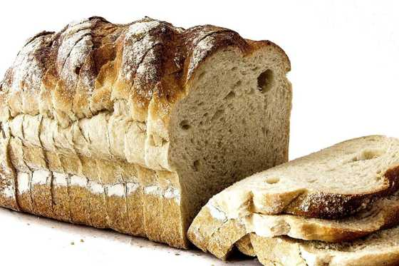
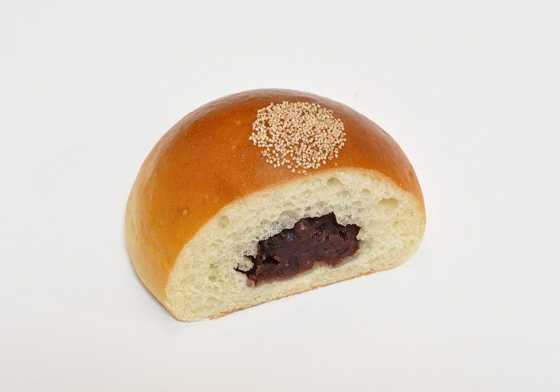
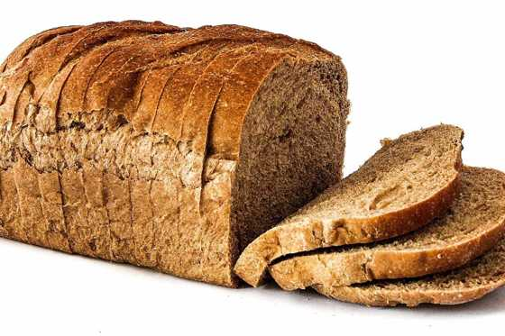
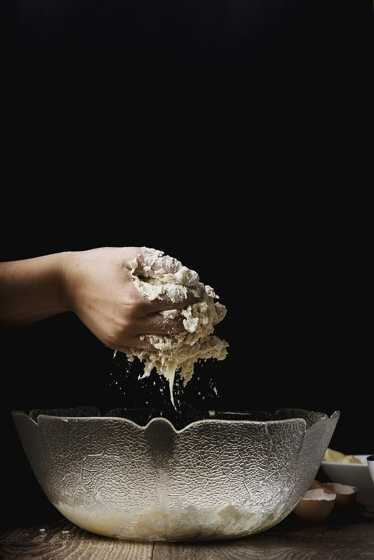

ホシノウエベーカリー
海を望む高台で、二日かけて育つ、レーズン酵母のパン。

※このコピーは制作側の案です。
お店の由来・想い
ホシノウエベーカリーは、東日本大震災のあと、東京から家族で串間市へ移り住んだ石山ゆきえさんが開いたパン屋さんです。海を見下ろす高台にあります。
生地には、有機レーズンから起こした自家製酵母と無農薬の小麦ブランを使い、約2日間かけて発酵させます。ベーコンや餡などの具材も手作りで、素材の味わいを引き出すパンづくりが紹介されています(宮崎日日新聞・タウン情報みやざき掲載の情報)。もともと委託販売で人気だったお店が、店舗を構えたとのことです。
※店名の意味は確認できていないため、記載していません。



メニュー
記事などで紹介されている品の例です。種類・価格・販売状況は変わる場合があります。
価格・詳細: 準備中 / 営業時間・定休日: 準備中(最新の情報はInstagramをご確認ください)


口コミ
イメージ例
酵母の香りがふわっとして、噛むほどに小麦の味がしました。
イメージ例
高台からの海の景色もごちそうでした。また寄りたいです。
イメージ例
焼き上がりのパンが並んでいて、どれにするか迷いました。
※上の口コミは制作側が作ったイメージ例で、実在の声ではありません。






写真クレジット
写真はフリー素材のイメージです。ライセンス: creativecommons.org
- croissants-tall.jpg: Herry Wibisono / CC0
- baguette.jpg: cocoparisienne / CC0
- knot-rolls.jpg: W.carter / CC0
- bread-light.jpg: FranHogan / CC BY-SA 4.0
- bread-round.jpg: ProjectManhattan / CC0
- sourdough-slices.jpg: Angel Ganev / CC BY 2.0
- sourdough-boule.jpg: Missvain / CC0
- rolls-rack.jpg: Kerstin Riemer / CC0
- anpan.jpg: Ocdp / CC0
- buns-tray.jpg: Ceeseven / CC BY-SA 4.0
- bread-dark.jpg: FranHogan / CC BY-SA 4.0
- loaf-board.jpg: Shisma / CC BY 4.0
- dough-hand.jpg: Gaelle Marcel / CC0
- wheat-warm.jpg: Jazzmaster1997 / CC BY 4.0